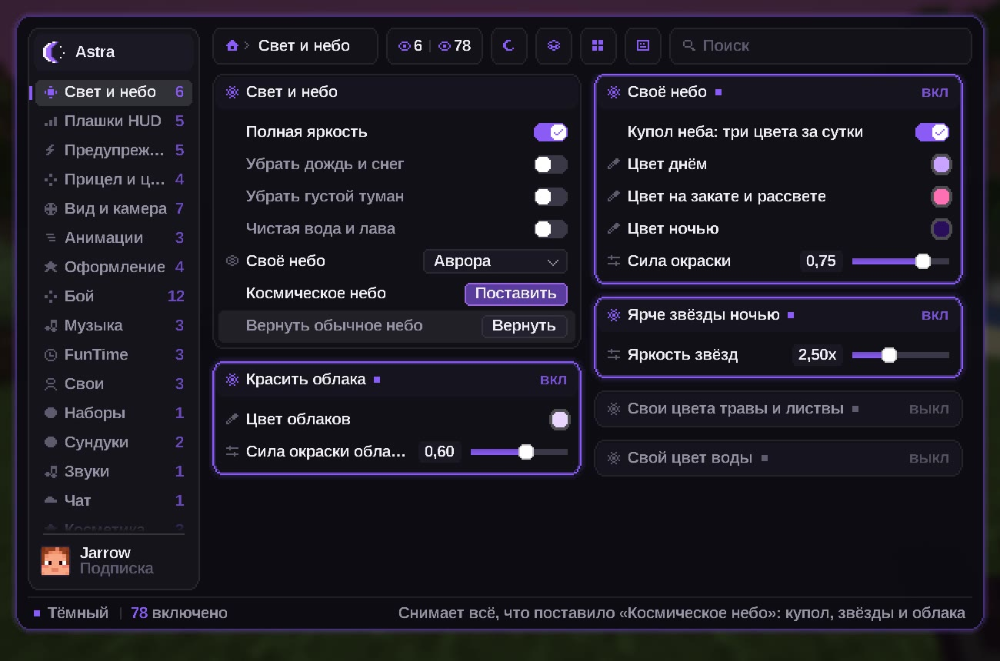
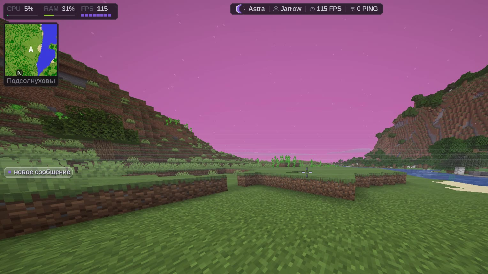
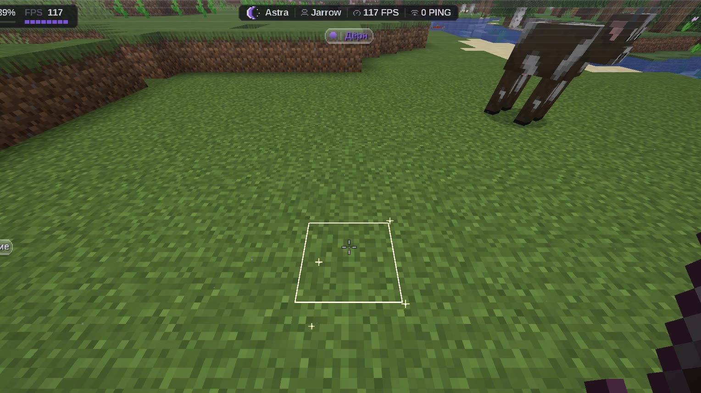
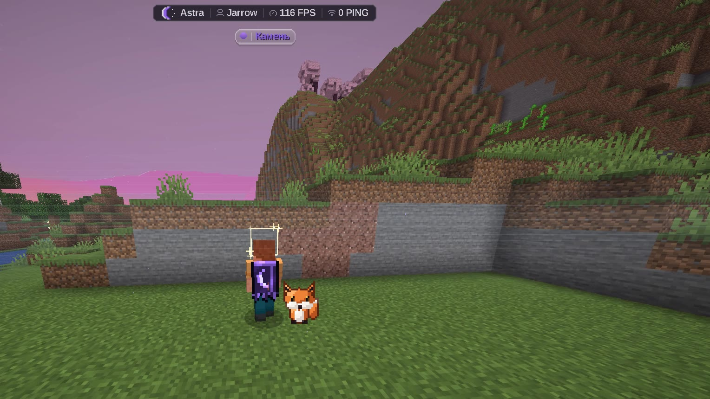
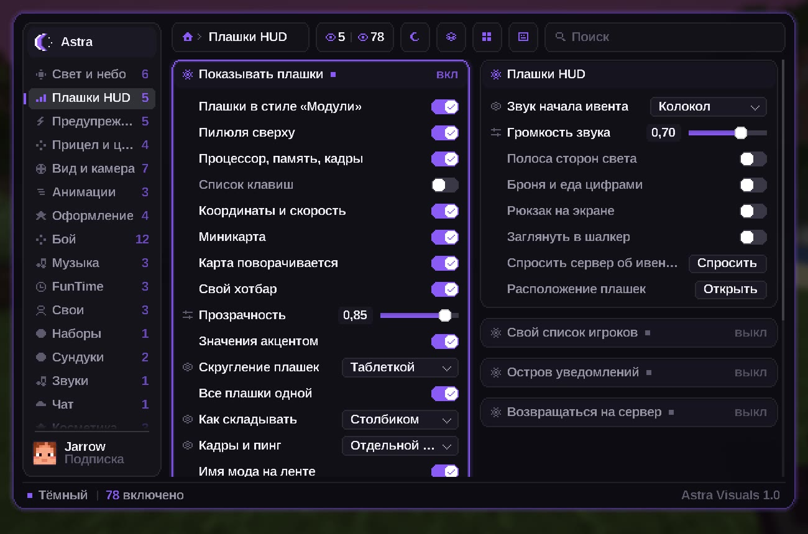

Меню «Модули»
Разделы слева, карточки модулей в две колонки, поиск по всем настройкам. Три вида: тёмный, светлый и неон.
правый ShiftМеню модулей, HUD, который собираешь сам, шейдеры, питомцы и облако настроек. Бесплатно, для Fabric 1.21.11, 1.21.1 и 1.16.5.

Всё снято в игре на текущей сборке. Ничего из этого не даёт преимущества в бою: только вид и удобство.
Разделы слева, карточки модулей в две колонки, поиск по всем настройкам. Три вида: тёмный, светлый и неон.
правый ShiftПилюля с ником, кадрами и пингом, процессор и память, миникарта, клавиши, координаты и свой хотбар. Каждую панель можно утащить мышью.
6 панелейСветящийся след за мечом, обводка блока с переливами или «святым» светом, круги по земле при прыжке и живой плащ.
без потери кадровКотик, лисёнок, дракончик и пчёлка заново нарисованы пиксель-артом: свет, тень, большие глаза. Бегут рядом с тобой.
видят все, у кого модМод помнит, что лежало в открытых тобой сундуках. Ищешь «алмаз» — он показывает, где. Отметка видна, только когда сундук перед глазами.
сквозь стены — нетЗашёл с другого компьютера — меню, тема, HUD и места плашек приезжают сами. Метки и тайники остаются только у тебя.
лаунчер 2.0



Один файл на 69 МБ для Windows 10 и 11. Устанавливать не нужно.
Почта и пароль. Аккаунт хранит звёзды, купленные темы и облако настроек.
Лаунчер сам поставит Minecraft, Fabric, мод и моды для кадров. Твою папку .minecraft он не трогает.
Если лаунчер у тебя уже стоит, он сам предложит обновиться до 2.0.
Скачать AstraClient 2.0